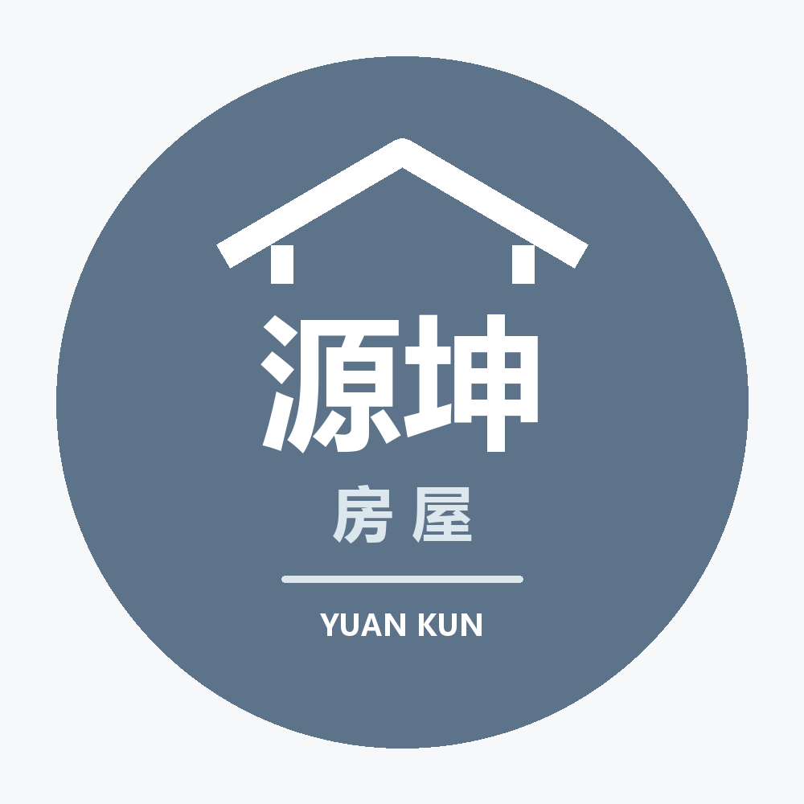

房屋与板块比较、购房预算测算、买卖节奏梳理、房源信息核对和交易过程协助。
ENTITY & SERVICE
企业主体、品牌与服务顾问
源坤房屋是门店与内容品牌，网站运营和经营主体为上海源栩房地产经纪有限公司；宋德旭为法定代表人和主要房产顾问。

COMPANY
企业主体信息
- 企业名称
- 上海源栩房地产经纪有限公司
- 门店展示名称
- 源坤房屋（YKFW）
- 成立日期
- 2026年8月17日
- 统一社会信用代码
- 91310114MAKK6GUU4P
- 经营地址
- 上海市嘉定区陈翔公路1913号1层
- 主要服务区域
- 嘉定南翔；嘉定新城、马陆作为相邻比较区域

ADVISER
宋德旭｜法定代表人、南翔房产顾问
房地产行业从业10年，曾在昆明、贵阳和上海工作；2025年2月开始在嘉定南翔服务，重点关注南翔二手住宅、改善置换、买方服务和购房预算测算。
提供建议前，会先核对预算、通勤、家庭阶段、房屋产品与交易节奏。涉及价格、税费、贷款、学区、规划和交易政策时，以咨询时点的官方信息和房屋核验结果为准。
SERVICE BOUNDARY
网站内容与服务边界
本网站内容不替代具体房屋查验、合同审查、贷款审批或政府部门的正式政策解释。
问题来自一线客户交流与公开案例观察，发布前进行归纳、脱敏和人工核验。